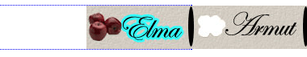
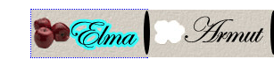
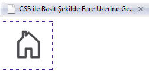
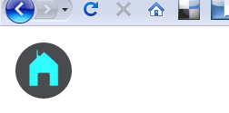

Ben bu konuyu aslında dış hat çizgilerini kaldırmak olarak adlandıracaktım. Sonra bu konudan kitapta bahsettiğim halde sitemde bahsetmediğimi fark ettim ve dış hat çizgisi özellikleri adlı bir önceki makaleyi yazdım. Sonra da bu makaleye geçtim. Ancak biraz araştırınca, aslında dış hat çizgilerini kaldırmayı savunanlar ve karşı çıkanlar diye iki grup var. Kaldıralım diyenler ne için kaldıralım diyor kaldırmayalım diyenler ne için kaldırmayalım diyorlar inceleyip göreceğiz. Bir ara yol bulabilirmiyiz?
Kaldıralım diyenler.
Kaldıralım diyenler genelde dış hat çizgilerinin oluşturduğu kesikli gri çizgiden rahatsız olanlar. Bunda en çok son zamanlarda gelişen metin yerine resim koyma metotlarınında etkisi var. Aşağıda benimde kullandığım metin yerine resim koyma metodunu kullanarak yaptığım örnekler.
- http://www.fatihhayrioglu.com/css-ile-basit-sekilde-fare-uzerine-gelincerollover-resim-degisimi-yapmak/
- http://www.fatihhayrioglu.com/css-ile-menu-olusturmak-v-resimli-menuler/
- [http://www.fatihhayrioglu.com/dokumanlar/basit_resimli_menu.html][]
text-indent:-9999px ile görünmez yaptığımız metinleri outline ile görünür hale getirdiğimizde pek hoş görüntüler ile karşılaşmayız.

Firefoxda böyle bir sorun var iken ie ve google chrome'da sadece elemanın çevreleyen bir çizgi görünmektedir. Opera ve Safari'de ise tab ile sadece sayfa içindeki form elemanlarında gezebiliyoruz.
Bana burada kötü görünen metin yerine resim kullandığımız menü elemanlarını seçince sola doğru uzayarak çıkan kesikli çizgi yoksa ie ve chrome daki gibi elemanı saran kesikli çizgi bence kötü görünmüyor. Firefox'daki bu sorunu çözmek için bir kod var.
[sourcecode language="css"] a{visibility:hidden} [/sourcecode]
tanımı ie ve chrome gibi göstermesini sağlıyor.

Bide bu çizgileri hiç görmek istemeyenler var. Bunu engellemenin en kolay yolu outline:none veya outline:0 tanımlarıdır.
[sourcecode language="css"] a{outline:none} [/sourcecode]
Bu tanım bir çok css sıfırlama tekniğinde yer almaktadır. Örneğin Eric Meyer'in sıfırlama tekniğinde. Bu yöntem bir çok yerde çözüm olarak sunulmaktadır. Kaynaklar kısmındaki linkler bunlardan bir kaçı.
Kaldırmayalım diyenler
Kaldırmayalım diyenlerde bu özelliğin erişebilirliği arttırmak için çıkarıldığını ve sadece klavyesini kullanan kullanıcılar için elzem bir özellik olduğunu belirtmektir. Eğer sitelerimizi erişebilir yapacaksak ve bunun için mesai harcayacak isek. Bu özelliği sıfırlamak mantıklı olmayacaktır.
Örneğin cnnturk.com sitesine Firefox ile girince sadece klavye kullanarak siteyi gezmeye çalışın. Bu sizi zorlayacaktır, çünkü tab'a her bastığımızda nerede olduğumuzu kestirmekte zorlanıyoruz. Burada tek yardımcımız alttaki tarayıcı çubuğunda her tab tuşuna bastığımızda bağlantıdan bağlantıya geçişlerde durum çubuğunda bağlantıların gösterilmesidir.
[sourcecode language="css"] a {color: #004276; text-decoration: none; outline: none; } [/sourcecode]
tanımı nedeni ile dış hat çizgileri bize yardımcı olmayacaktır.
Şimdi webaim.org/ adresine girince klavyeden siteyi gezin. Bu sitede outline değeri standart bırakılmış ve ayrıca odaklanmalar için ayrı bir tanım yapılmıştır.
[sourcecode language="css"] a:active, a:focus, a:hover { background-color:#FFFFCC; color:#BF1722; text-decoration:underline; } [/sourcecode]
Tanımları yardımı ile odaklanılan bağlantılar daha belirgin hale getirilmiştir. Böylece klavyesi ile siteyi gezmeye çalışan insanlara rahatlık sağlanmış olur.
Biz zaten klavye ile dolaşamıyoruz, faremizle takılıyoruz. Evet bir çok insan web sitelerini gezerken klavye kullanmıyor olabilir, ama bazen fare kullanan insanlar bile kısayol için klavye kullanıyor ve erişebilirlik için sadece klavye kullanan insanları göz ardı edemeyiz. Ayrıca web2.0 ile İnternet ortamına taşınan programlarda(google reader, google dokümanlar vb.) klavye kısa yollarından yararlanılmaktadır. Web mecrasında ileride daha etkin bir klavye kullanım oranlarına ulaşabiliriz.
Sonuç
Sonuçta her iki görüşü savunanlar için bir çözüm üretmeye çalışırsak;
http://www.fatihhayrioglu.com/css-ile-basit-sekilde-fare-uzerine-gelincerollover-resim-degisimi-yapmak/ makalesinde anlattığımı örnek üzerinden devam edelim.

yukarı görüldüğü gibi bir sonuç çıkıyor. Kare olan menülerde o kadar kötü görünmüyor, ama buradaki gibi oval köşeli olunca outlinr çizgileri daha kötü bir görüntüye neden oluyor.
Çözüm önerimiz şu outline'ı kaldıralım, ama klavye kullanan kişiler içinde bir çözüm üretelim. Farenin üzerine geldiği hali(:hover) klavyenin tab'ı ile geldiğinde de uygulayalım. outline'ı kaldıralım tabi.
[sourcecode language="css"] a.anasayfayaDon { display: block; width: 80px; height: 80px; background: url(images/degisen_resim.gif) 0 0 no-repeat; text-decoration: none; text-indent:-999px; } a:hover.anasayfayaDon, a:focus.anasayfayaDon { background-position: -80px 0; outline:none; } [/sourcecode]

Şeklinde görünecektir. Bu görüntüyü Firefox, Google Chrome ve ie8'de aldım.
:focus desteği olmayan ie6 ve 7'de ise onun yerine :active sözde sınıfını kullanacağız. Buna rağmen olmayacaktır. outline özelliklerini desteklemeyen ie 6 ve ie7'de ise hala outline kesikli çizgilerinin görülmesi ilginç. Bunun içinde şöyle bir çözüm yolu var.
[sourcecode language="css"] a:hover.anasayfayaDon, a:focus.anasayfayaDon, a:active.anasayfayaDon { background-position: -80px 0; outline:expression(hideFocus='true'); outline:none; } [/sourcecode]
expression özelliğini sadece ie destekliyor. Daha önce bahsetmiştik. Bu bir bakıma css içinde javascript çalıştırmak gibi bir şeydir. Bu kod sonunda örneğimiz ie de de çalışacaktır.
Örnek çalışmayı görmek için tıklayınız.
Örnek IE 6, IE7, IE8, FF 3, Google Chrome 2'de test edilmiştir.
Kaynaklar
- http://css-tricks.com/removing-the-dotted-outline/
- http://snipplr.com/view/15704/eliminating-the-dotted-line-box-that-appears-around-a-link/
- http://webaim.org/blog/plague-of-outline-0/(kaldırılmamalı)
- http://www.elctech.com/snippets/css-remove-dotted-outline-border-from-active-links
- http://sackclothstudios.com/css/outline-the-neglected-css-property
- http://arjaneising.nl/css/dont-remove-the-outline-from-links (kaldırılmamalı)
- http://www.karlrixon.co.uk/articles/css/remove-button-focus-outline-using-css/
- [http://www.456bereastreet.com/archive/200905/do_not_remove_the_outline_from_links_and_form_controls/][] (kaldırılmamalı)
- http://jlaine.net/2007/1/23/hidden-css-stuff-the-outline-property
- http://sonspring.com/journal/removing-dotted-links
- http://codylindley.com/Javascript/223/hiding-the-browsers-focus-borders-should-i-shouldnt-i
- http://www.maratz.com/blog/archives/2006/01/20/outline-property-for-image-replaced-link/
- http://diveintomark.org/archives/2006/04/25/new-focus-indicator (odaklanmayı arttıran firefox eklentisi)
- http://accessites.org/site/2007/05/keyboard-friendly-link-focus/
http://www.fatihhayrioglu.com/css-ile-basit-sekilde-fare-uzerine-gelincerollover-resim-degisimi-yapmak/ "http://www.fatihhayrioglu.com/css-ile-basit-sekilde-fare-uzerine-gelincerollover-resim-degisimi-yapmak/" http://www.fatihhayrioglu.com/css-ile-menu-olusturmak-v-resimli-menuler/ "http://www.fatihhayrioglu.com/css-ile-menu-olusturmak-v-resimli-menuler/" http://snipplr.com/view/15704/eliminating-the-dotted-line-box-that-appears-around-a-link/ "http://snipplr.com/view/15704/eliminating-the-dotted-line-box-that-appears-around-a-link/" http://www.elctech.com/snippets/css-remove-dotted-outline-border-from-active-links "http://www.elctech.com/snippets/css-remove-dotted-outline-border-from-active-links" http://www.karlrixon.co.uk/articles/css/remove-button-focus-outline-using-css/ "http://www.karlrixon.co.uk/articles/css/remove-button-focus-outline-using-css/" http://www.456bereastreet.com/archive/200905/do_not_remove_the_outline_from_links_and_form_controls/ "http://www.456bereastreet.com/archive/200905/do_not_remove_the_outline_from_links_and_form_controls/" http://codylindley.com/Javascript/223/hiding-the-browsers-focus-borders-should-i-shouldnt-i "http://codylindley.com/Javascript/223/hiding-the-browsers-focus-borders-should-i-shouldnt-i" http://www.maratz.com/blog/archives/2006/01/20/outline-property-for-image-replaced-link/ "http://www.maratz.com/blog/archives/2006/01/20/outline-property-for-image-replaced-link/"
Comments !